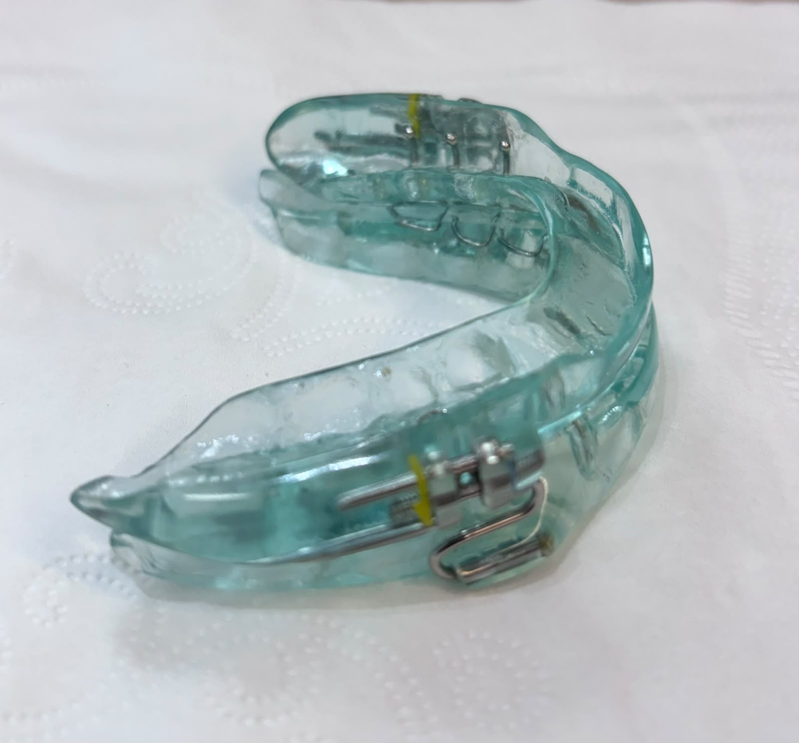
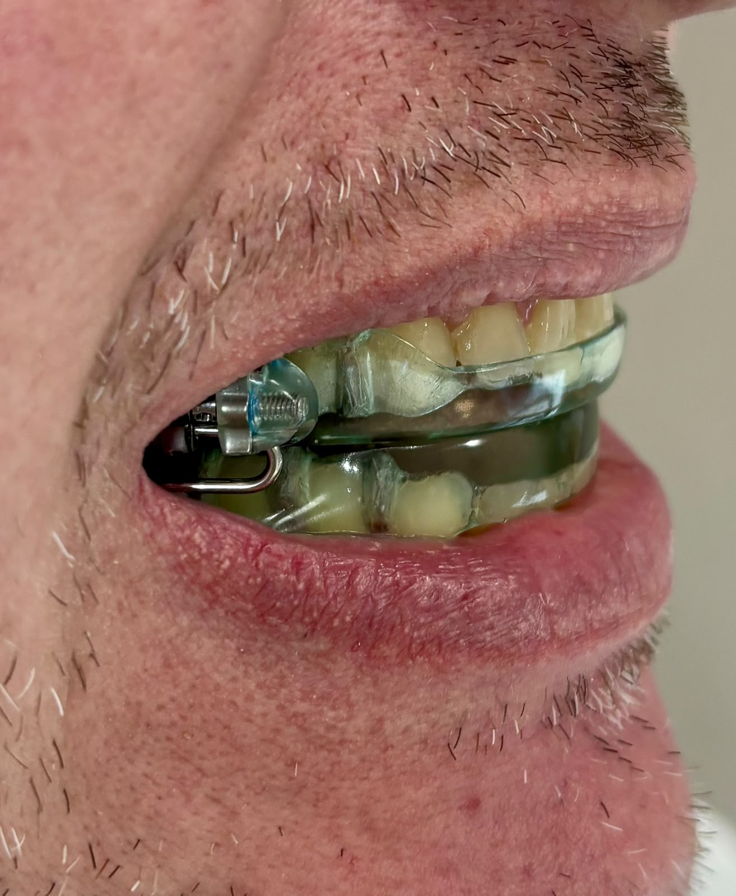
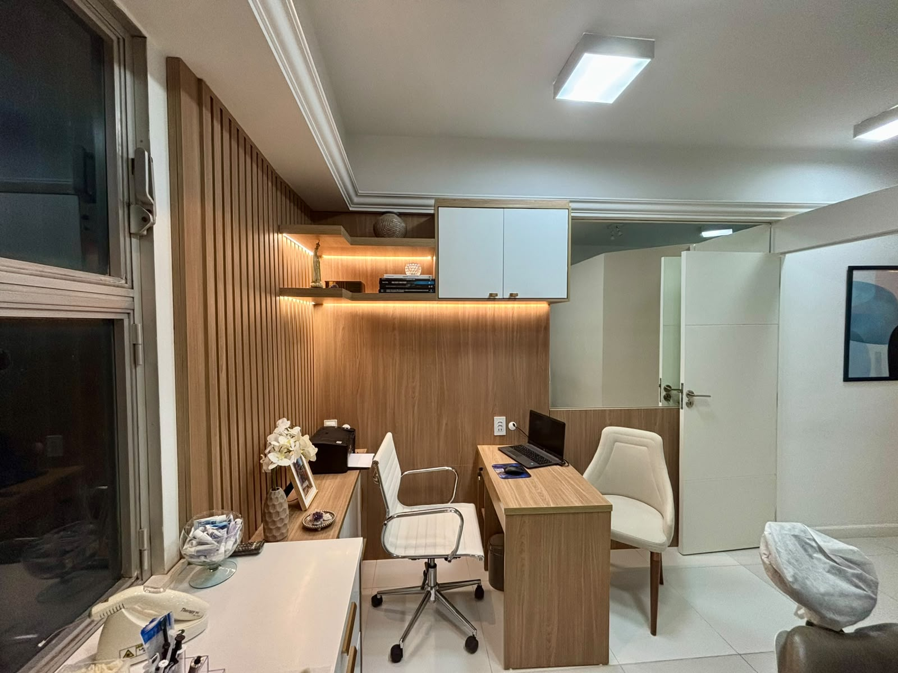

01.
Ronco
Investigação do quadro e avaliação odontológica das possibilidades de tratamento, considerando o diagnóstico e as características individuais.
Avaliação odontológica do ronco e da apneia obstrutiva do sono, com atenção individualizada e indicação criteriosa de aparelhos intraorais.
Dra. Adriana Souto Nôga · Odontoarte, Centro do Rio
Como podemos ajudar
O ronco pode ter diferentes causas e, em alguns casos, estar associado à apneia obstrutiva do sono. A avaliação adequada ajuda a definir as possibilidades de cuidado e a necessidade de investigação com outros profissionais de saúde.
Investigação do quadro e avaliação odontológica das possibilidades de tratamento, considerando o diagnóstico e as características individuais.
Atendimento odontológico integrado ao diagnóstico médico e à avaliação do sono, com atenção às indicações e limitações de cada modalidade terapêutica.
Dispositivo de avanço mandibular que pode ser indicado em casos selecionados, mediante avaliação clínica e acompanhamento profissional.


O tratamento odontológico do ronco e da apneia exige avaliação cuidadosa, considerando o histórico de saúde, a condição bucal, o diagnóstico e as necessidades do paciente.
O aparelho intraoral não é indicado para todas as pessoas e não substitui automaticamente outras terapias, como o CPAP. A escolha deve ser individualizada e, quando necessário, articulada com a equipe médica.

Atendimento individualizado
Cirurgiã-dentista e fundadora da Odontoarte, com atendimento em Odontologia do Sono no Centro do Rio de Janeiro.
Etapas do atendimento
Odontoarte, Centro do Rio. Fale com a equipe pelo WhatsApp para consultar os horários disponíveis.
Atendimento no Centro do Rio de Janeiro, com acolhimento e planejamento individualizado.
Avenida Rio Branco, 156, sala 1001
Odontoarte, Centro do Rio
Fale com a equipe da Odontoarte pelo WhatsApp e saiba como agendar seu atendimento com a Dra. Adriana Souto Nôga.
Dúvidas frequentes
Não encontrou sua pergunta? Fale com a equipe no WhatsApp.
Não. O ronco pode ocorrer sem apneia, mas também pode estar associado a ela. A investigação adequada é importante para esclarecer o quadro.
Não. A indicação depende do diagnóstico, da gravidade, das condições odontológicas e de outros fatores clínicos, avaliados individualmente.
Não necessariamente. São abordagens com indicações diferentes. A decisão terapêutica deve considerar a avaliação profissional e o acompanhamento apropriado.
Para diagnóstico e classificação da apneia, a avaliação médica e os exames do sono podem ser necessários. A equipe orientará sobre a documentação e o encaminhamento adequados.
As informações desta página são informativas e não substituem uma avaliação odontológica individual. Dra. Adriana Souto Nôga · CRO-RJ 17.426-6.